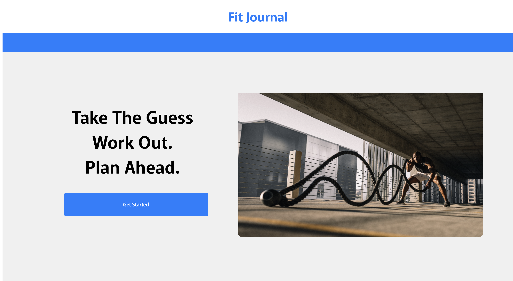

JUSTIN VU Full Stack Software Engineer Detroit, MI
SKILLS
My tech skills include Javascript, its frameworks (Node.js, Express), and databases (SQL). I also have experience with cloud services (AWS), front-end development (HTML5, CSS, version control (Git, GitHub), and API development and testing (Postman). In addition to my technical skills, I have strong problem-solving and communication skills, and love working in a team environment. I'm committed to continuous learning and improvement.
PROJECTS

Fit Journal Project Demo
Fit Journal is a demo project designed to help users track their exercises and improve their workouts. This project aims to make it easy for users to input and reference their workouts.
Javascript | HTML5 | CSS | axios | cors | express